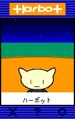
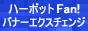

ハーボット
懐かしの Harbot (ハーボット) が配置されていたページを2019年に再現。文面は2003年当時の本サイトのテキストをサルベージしたモノ。
Neo's Harbot

名前は「マイケル」。由来はマイケル・J・フォックスから。多少ボケっとしている設定。カートで遊べるので、ランキング1位を狙って頑張ってね。
ハーボットで相互リンクしませんか？してくださる方は、自分のハーボットの「リンクする」を選んで、出てきた画面にこのページの URL を入れて相互リンクを申し込んでね。サイトのジャンルは何でも OK。
以下のハーボット関連サイトに参加中。
- ハボサーチ (
http://habo.cute.bz/) -
 ハーボット Fan! (
http://www.harbotfan.com/) - ハーボットリング (
http://www.webring.ne.jp/cgi-bin/webring?ring=harbot_ring;home)
当時の思い出
2001年10月にソネットによってサービス提供されたハーボット。当時の個人サイトには大抵置かれていた。リヴリーが流行るまでは、個人ページに配置できるペット型サービスとしては唯一無二だったと思う。同じくソネットが提供していたメールクライアントの「PostPet (ポストペット)」もソネット提供だったが、個人サイトが普及してきたところを狙って提供し始めたのだろう。
話しかけてもイマイチ面白い反応をしないし、よく円錐の耳の部分だけ置いて出掛けていたし、ユーザが覚えさせた単語もあんまり覚えていてくれないし、精度が低めのおバカなペットだったと記憶している。Shockwave か Flash 製で、当時 ADSL でも動作はモッサリしていた記憶がある。ゴーカート的なミニゲームがあったらしく、それが面白かったために紹介ページにも書いていた模様。
当時のハーボット配置用コードは以下のような感じだった。
<script language="JavaScript" src="http://harbox-harbot.so-net.ne.jp/h.jsp?hbxid=370938"></script>この JSP ファイルの中身も Archive.org に残っていて、Flash プラグインがインストールされているかどうかチェックしたり、OS のバージョンをチェックしたりしているところが「時代」って感じ。本ページに貼ったハーボットの GIF 画像は、この JSP が返す noflash.gif を貼ったモノ。
当時乱立していたサーチエンジンやウェブリングも懐かしい。貼り付け用コードには map・area 要素を組み合わせた「イメージマップ」があったり、ilayer なるネットスケープ独自の要素が含まれていたりと、時代過ぎる。
現在も残るハーボット関連ページの一部を紹介して終わりとしよう。
ハーボットのサービスは2008年に終了。それから11年経つが、いつも「なんとなく」居てくれたハーボットのことは、これからも忘れない。